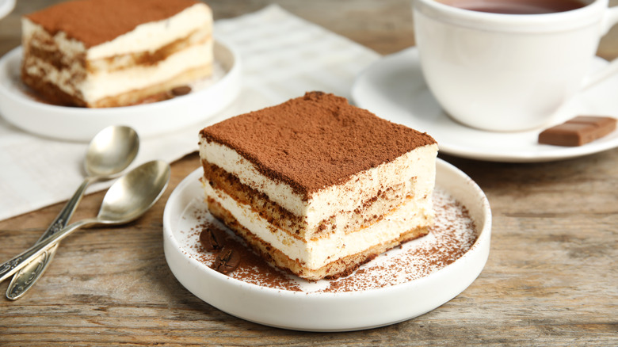

Tiramisu

Description
This is my version of Italian no-bake Tiramisu with espresso dipped Ülker tea biscuits and a homemade cream mix topped with some cocoa powder.
This is the most amazing dessert with it's beautiful layers and sweet, fluffy taste.
Ingredients
- 6oz of Ülker tea biscuits
- 2 cups of Heavy cream
- 14oz of Condensed milk
- 2 tablespoon of Instant coffee
- 1 cup of Warm water
- Cocoa powder
Steps
- Take warm water, add coffe and mix it until it is dissolved. Set aside the coffee mixture.
- Put heavy cream in a bowl and whisk it until medium peaks form.
- Add condensed milk in heavy cream and fold it with a spatula.
- Add 2 tablespoons of the coffee mixture in the cream and fold it.
- dip the biscuits in coffee mixture.
- Add a layer of biscuits on a rectangular glass casserole.
- After the first layer of biscuits,add 1/3 of the cream mixture and smooth the layer with an offset spatula.
- Add another layer of biscuits and cream.
- Then add another layer of biscuits and the remaining cream.
- Smooth the cream and dust it with some cocoa powder.
- Chill it overnight.
- Cut square pieces and Enjoy!